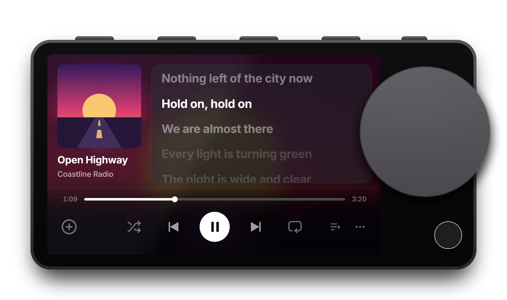
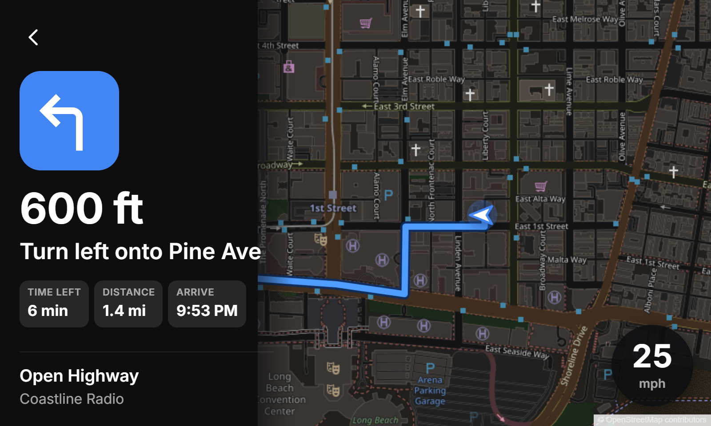
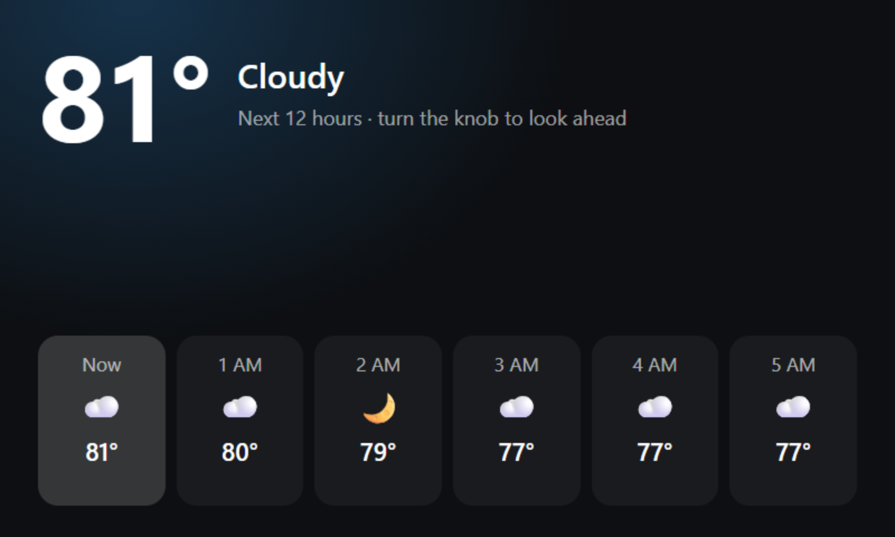
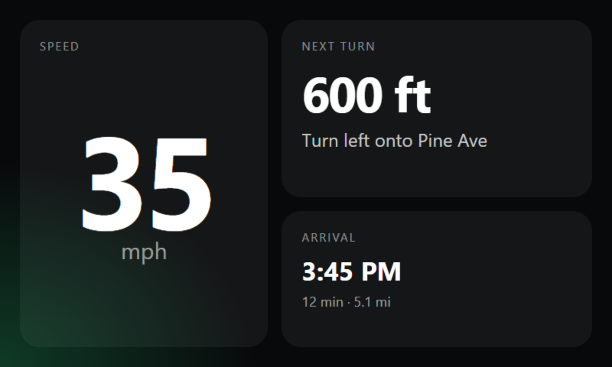
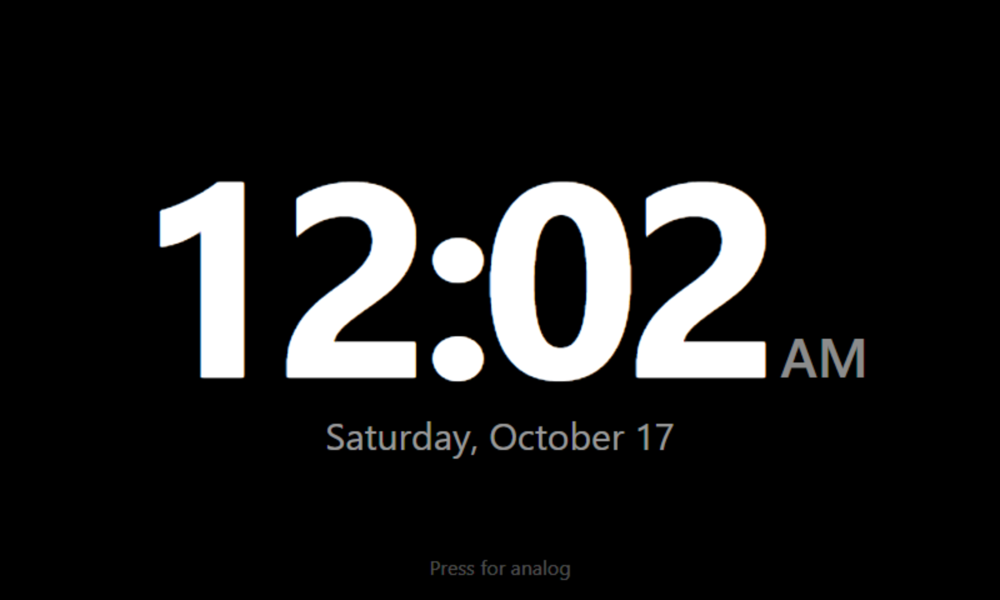
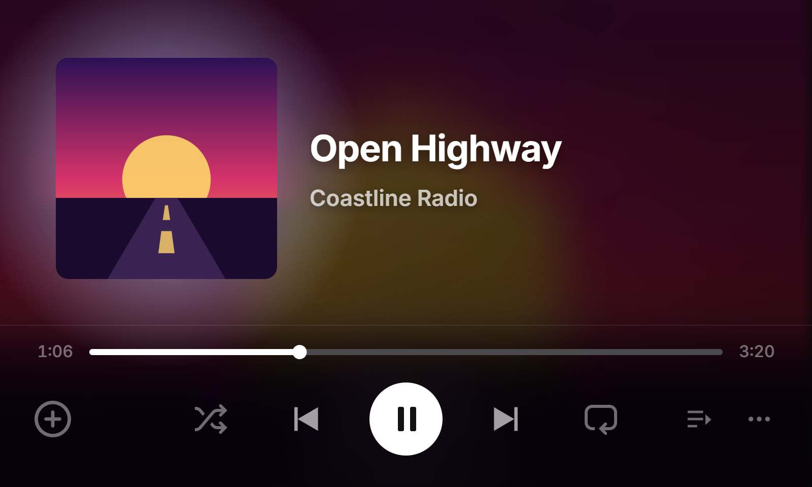
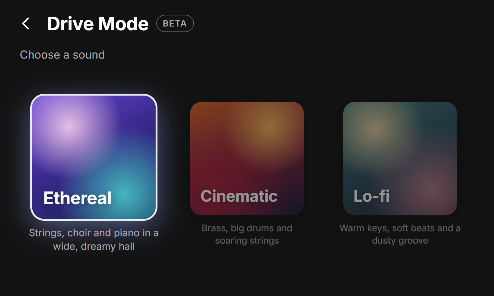
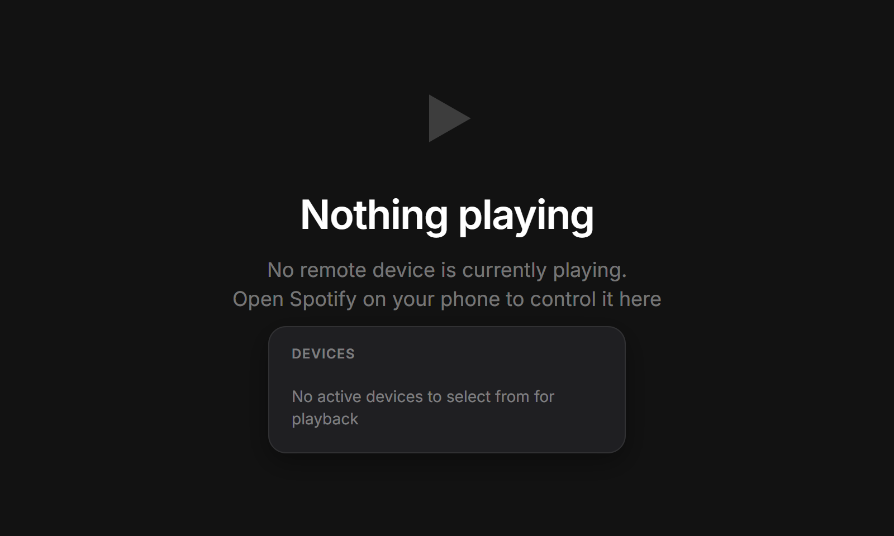
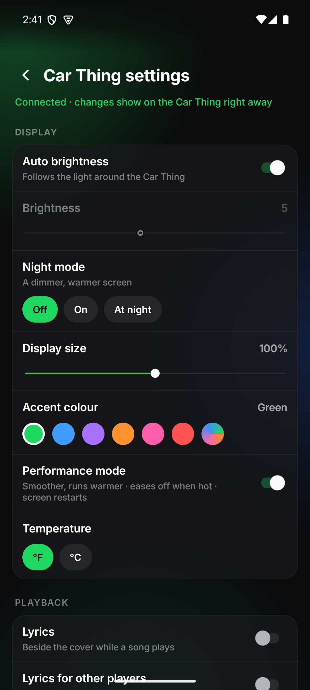

Library
Your music, on the knob
Recents, Liked Songs, DJ, playlists, albums and artists. Start anywhere or shuffle.
Spotify switched the Car Thing off. Wisp turns it back on, and then some: your music on the knob, directions from your phone, lyrics in time and a voice that answers. Free and open source.

Features
Turn the knob to browse, press to play. Wisp keeps the parts that made the Car Thing good, and adds what it was missing.
Recents, Liked Songs, DJ, playlists, albums and artists. Start anywhere or shuffle.

Synced line by line beside the cover, for Spotify and for what else your phone plays.

Turn-by-turn from Google Maps on your phone, on a live map with your route.
Play, queue, like or skip by voice. Heard on the Car Thing itself, not in the cloud.

YouTube Music and SoundCloud libraries, plus anything else playing on your phone.

It opens up as you pull away, settles when you coast and goes quiet at a stop. Ethereal, Cinematic and Lo-fi.

Answer or decline with the knob. Notifications slide in, and your phone's battery shows when it's low.
Voice
Say "Okay Wisp" and ask the way you'd ask a person. Wisp hears you on the Car Thing itself, and keeps track of what you just said.
"I wanna hear Daft Punk", "a little louder", "play something chill", "I don't like this one".
"Play the album", "more by them", "no, the other one", "start it over".
"Who sings this?", "when do we get there?", "what's my next turn?", "what's the weather?"
"Take me home", "call Mom", "start Drive Mode", "dim the screen", "night mode on".
Everyday requests are understood on the Car Thing, with no phone needed. With the Wisp app, anything looser goes to a language model on your phone: Gemini Nano where the phone has it, or an open model you can download. Either way, nothing you say leaves your phone and Car Thing.
Add-ons
Add-ons are small pages the community makes for the Car Thing's screen: a forecast, a big clock, trip gauges, and whatever comes next. Install them from Home → Add-ons; they open full screen and work with the knob.



Every add-on in the catalog comes through a pull request, and the Car Thing checks each download against its checksum.
An add-on can't touch your sign-ins, settings or controls. It sees only what it asks for, like the weather, and you see that list before installing.
Add-ons only run while they're open, so they don't slow the Car Thing down.
Plain HTML and a little script. Start with the guide.
Every screen










Wisp Companion
The free Android app links your phone to the Car Thing over Bluetooth, so it works anywhere your phone does.


Get started
Over Bluetooth from your phone, or over USB from a computer. How
Scan the code on the Car Thing with your phone and sign in. That's it.
Install Wisp Companion on your Android phone for directions, calls and more.
Open source
Every line of Wisp is on GitHub: the firmware, the screens, the voice and the app. Build it yourself, fork it, or send a fix.